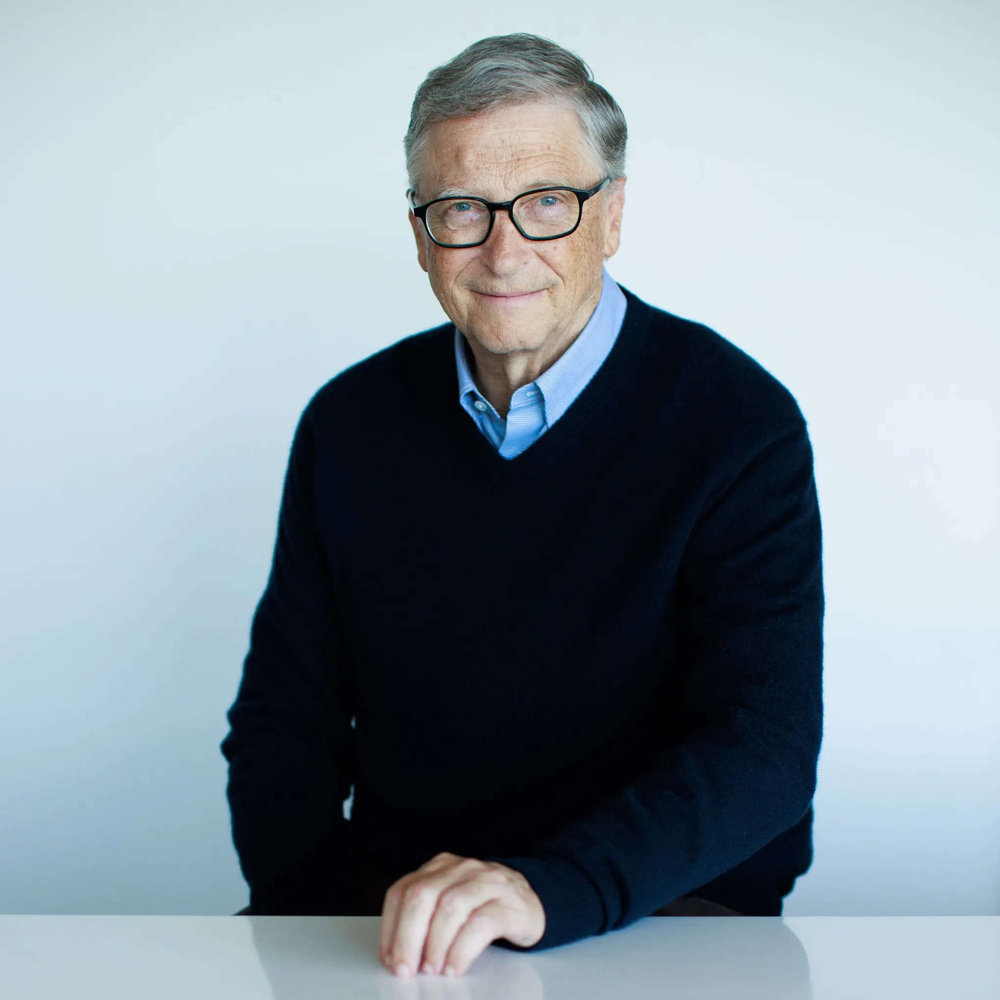

Bill Gates

Bill Gates, born on October 28, 1955, is an American business magnate, software developer,
and philanthropist.
He co-founded Microsoft, one of the world's largest and most successful technology companies.
Gates played a significant role in the development of the personal computer industry,
and his contributions have had a lasting impact on technology and business.
Click here to learn more about Bill Gates